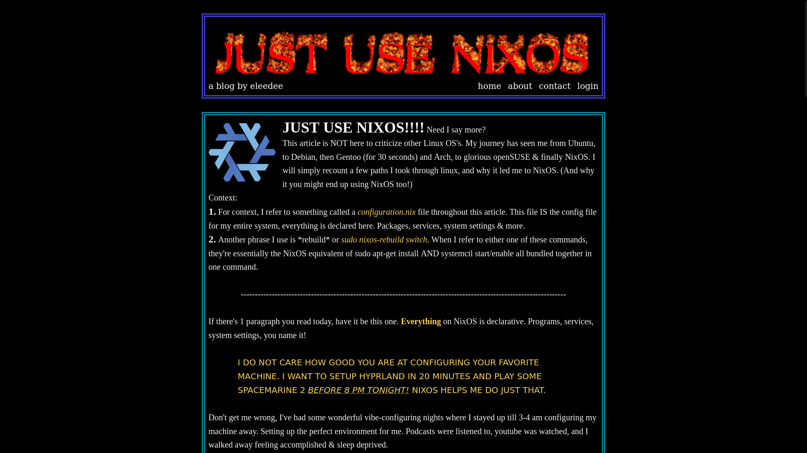

Welcome Hackers!
Recently I've had the opportunity create a few CTF challenges for BSidesSLC, BSidesCache & BSidesRedRocks! It's been the absolute sickest thing to
be there and experience the aura that comes from a bunch of hackers sitting together in a room hacking away at something.
The feeling to have a challenge you made be used for one of these competitions is a feeling that's on a completely other level.
Below are some of those challenges. Made with loves of love, by a homie, for the homies.
Note that these challenges have a tag next to them which indicates what type of challenge it is. There are also writeups for all these challenges, but try not to
spoil it for yourself! Refer to the writeups when you get stuck!
Lastly, my web challenges are built using docker, a basic understanding of how to use docker is necessary. Literally you'll just need to download the challenge from my github, switch directories & run sudo docker-compose up. That's it! Happy Hacking!!
JUST-USE-NIXOS
WEB
